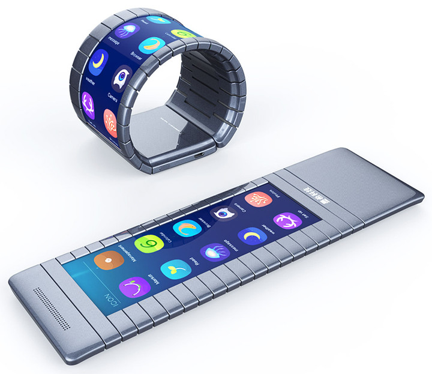

Гибкие дисплеи становятся все более популярным трендом. Например, ими очень заинтересованы такие компании, как Samsung и LG. Правда, следует отметить, что по-настоящему гибких продуктов на базе гибких дисплеев мы пока еще не видели. Но все может измениться уже в этом году. Китайский стартап Moxi Group объявил о том, что планирует выпустить на рынок в этом году по-настоящему гибкий смартфон.
Радоваться пока правда рановато. Мы вряд ли увидим какой-нибудь причудливый клон Galaxy S7 с функцией «сложиться в трубочку». Согласно исполнительному вице-президенту Moxi Group Чону Шень Ю, первый гибкий смартфон компании будет использовать черно-белый дисплей на базе электронных чернил.
Сколько же будет стоить такое чудо-устройство с черно-белым экраном? Весьма кусачие 760 долларов, если верить информации CNN Money. На запуске устройство будет доступно только в Китае, однако если спрос на него будет достаточно высоким, то, согласно Moxi Group, это откроет двери для продаж новинки за пределами родной страны. Что интересно, на этом планы компании только начинаются. Ю заявил, что первый смартфон компании с цветным гибким дисплеем появится на рынке уже в 2018 году.
Для создания гибких дисплеев компания использует слой графена (производится из тончайшего слоя атомов углерода, расположенных таким образом, что они наделяют материал высокой проводимостью). Конечно же, не все устройство будет гибким. В конце концов производить гибкие батареи сейчас гораздо затратнее и труднее, чем гибкие дисплеи. Поэтому на одном из концов устройства будет находиться модуль, в котором будут содержаться все компоненты, которые невозможно, что называется, согнуть.